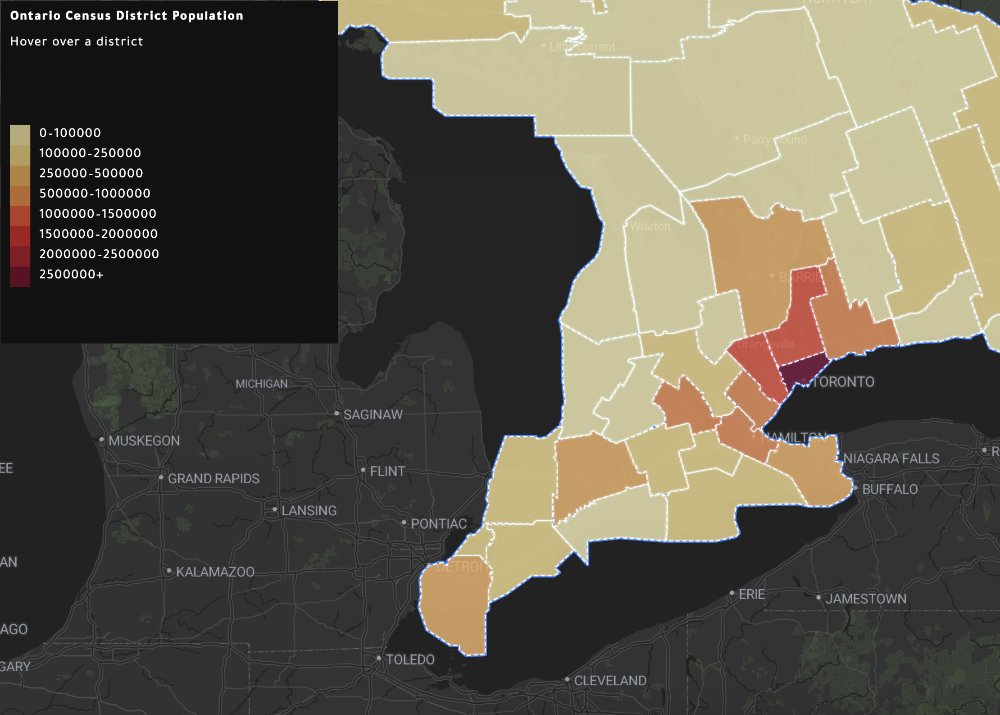
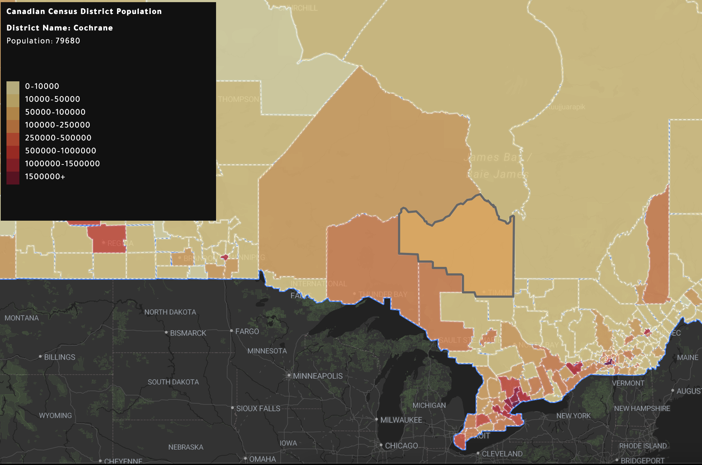

Provincial Census District Population Choropleth Map
Explore Ontario's census districts by population. Hover or click on regions to see detailed data and interact with the map.
Open MapView census district and sub-district maps at federal, provincial, and municipal levels across Canada.

Open Map
Open Map